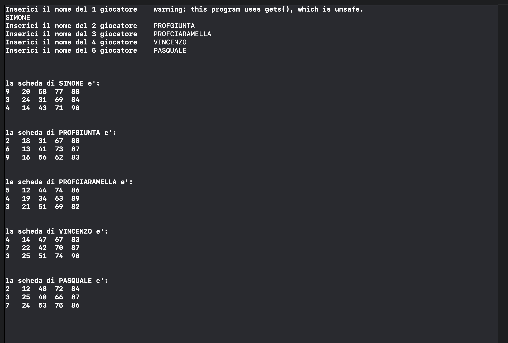
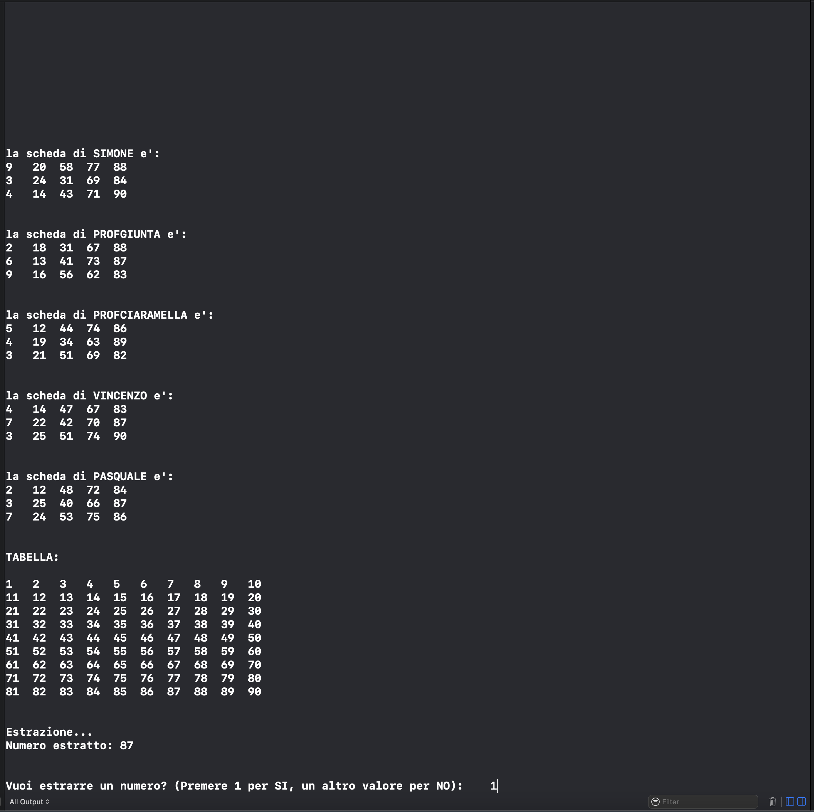
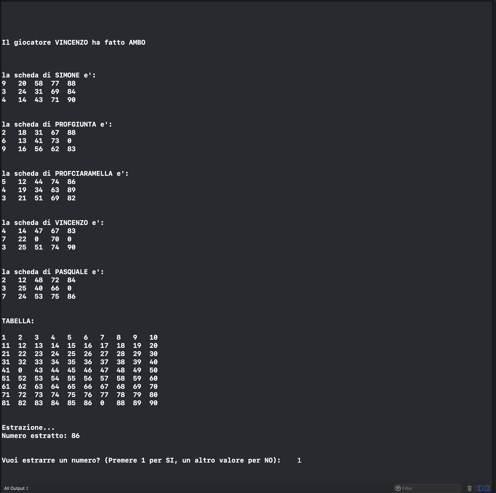
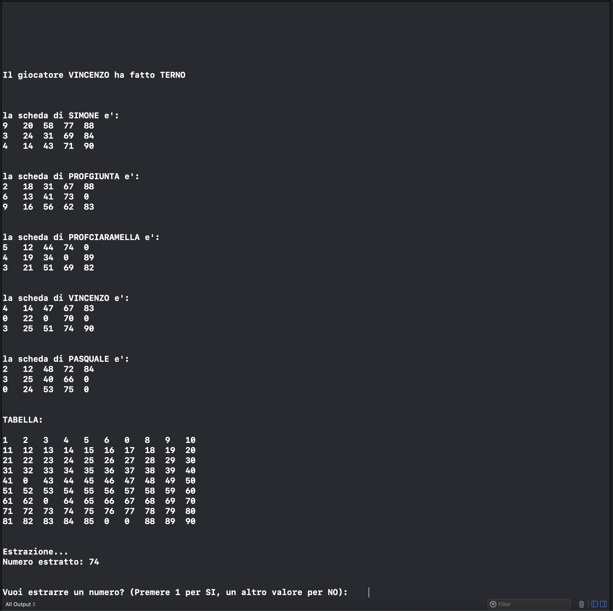
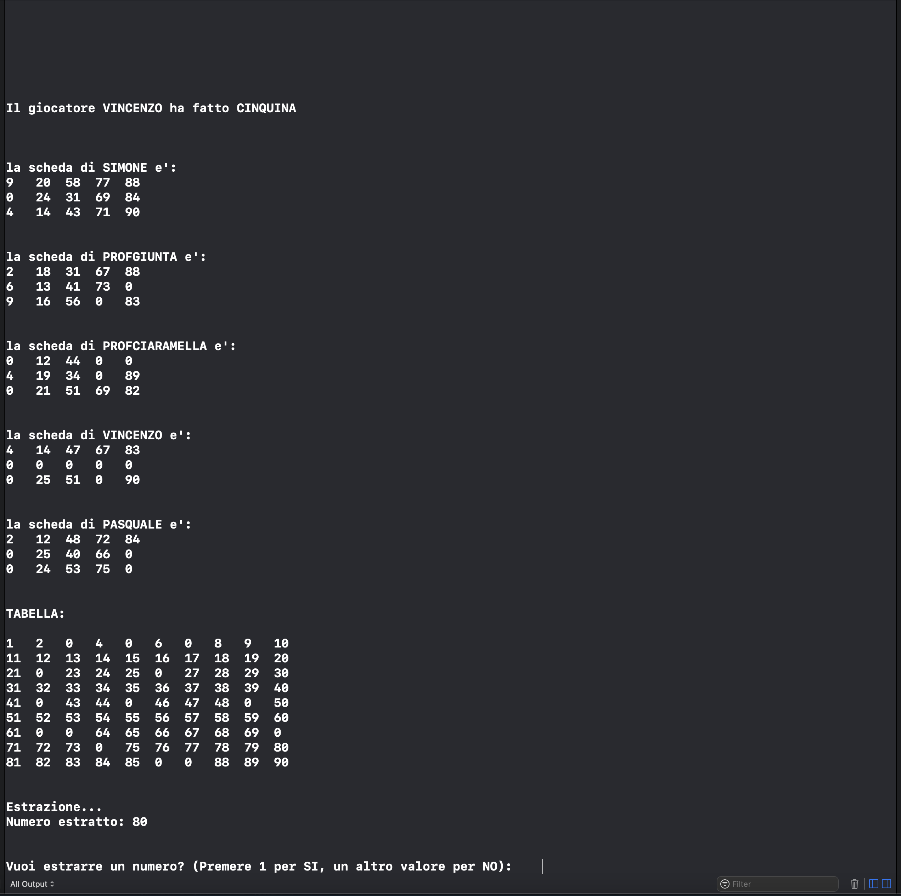

Questo è il terzo test del gioco della tombola. In questa foto vediamo i giocatori che sono stati inseriti: Simone, ProfGiunta, ProfCiaramella, Vincenzo, Pasquale e vedremo anche le varie schede dei giocatori caricate con i valori casuali grazie alla funzione rand:

In questa foto viene mostrato il tabellone principale con i valori da 1 a 90 e l'estrazione di un numero, per andare avanti e proseguire l'estrazione bisogna inserire il valore 1 altrimenti il programma terminerà

In questo caso notiamo che il giocatore Vincenzo riesce a fare sia ambo, terno, quaterna e quintina



Infine viene mostrato il giocatore che ha fatto tombola e che ha vinto la partita, in questo caso il giocatore ProfGiunta.